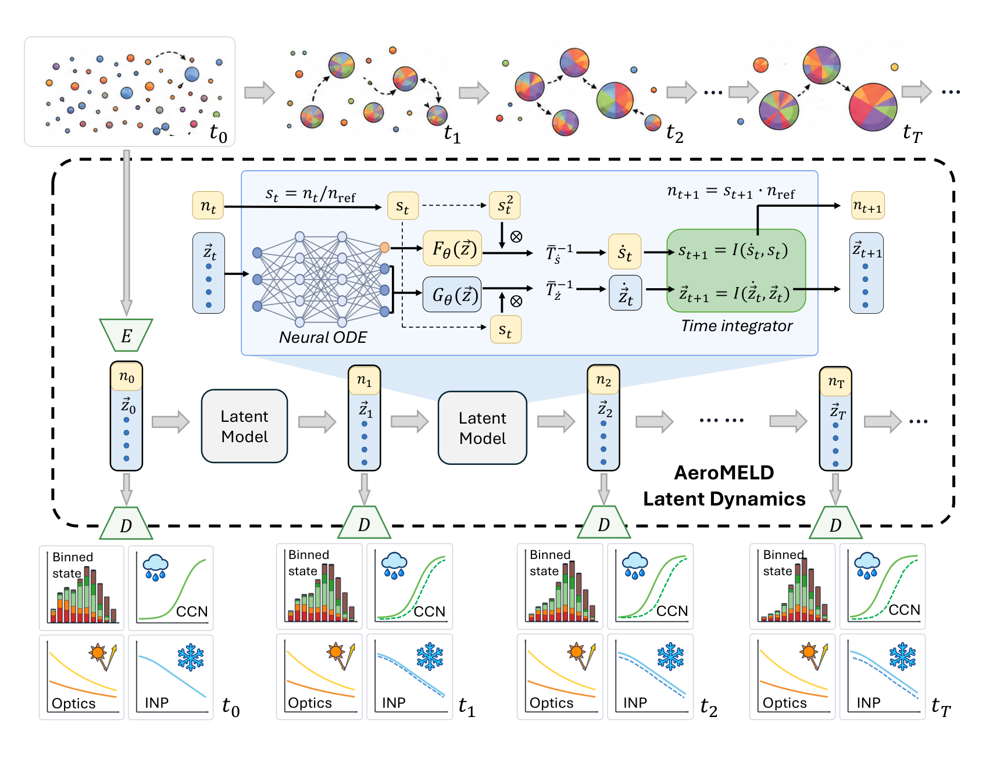
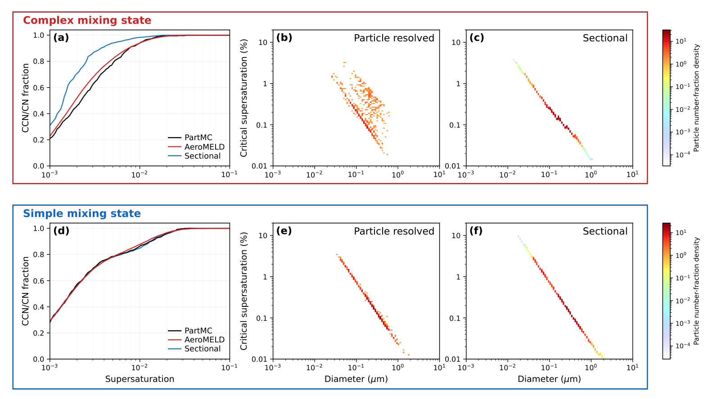

AeroMELD-Coag: Learning Aerosol Coagulation Dynamics in Latent Space
University of Illinois Urbana-Champaign · University of Wisconsin–Madison · Sandia National Laboratories
Predicting aerosol evolution
Ten evolving variables · selected held-out case
Nine latent shape coordinates
solid: PartMC · dashed: AeroMELD48 h rollout · Source figure
Cloud activation
Same aerosol population, three representations
The sectional model overestimates activation in this case.
48 h spectra · Source figure
How it works

The encoder is used at initialization. The neural ODE then advances N and z, and the decoder is evaluated at output times.
Method
Follow the connection between the particle population, its learned dynamics, and the physical quantities recovered from it.
Retain population structure in a small learned state.
A shared particle encoder maps species-mass vectors to learned features. Number-weighted aggregation gives nine shape coordinates, while total number concentration is retained explicitly.
The encoder and decoder follow the existing AeroMELD representation and remain fixed during dynamics training.
Concentration scaling
Binary collisions fix how coagulation rates depend on concentration. AeroMELD-Coag incorporates this dependence explicitly and learns the remaining dependence on population shape.
At the same normalized population and collision environment, a concentration change has a prescribed effect on the instantaneous rates.
dN/dt = N² F(z)
dz/dt = N G(z)
Analytical scaling at fixed shape and environment; this control illustrates the equations, not a new model simulation.
Mixing state and cloud responses
Compare decoded predictions with particle-resolved references and a conventional sectional model.
Composition differences change cloud activation.
In this selected case, particles of similar size have different critical supersaturations. The sectional representation averages composition within each size bin. AeroMELD more closely follows the particle-resolved activation spectrum.

Selected mixing-state example from the arXiv paper. Particle maps show PartMC and sectional representations; AeroMELD is evaluated through its predicted activation spectrum.
Comparison with the sectional model
Diagnostic accuracy across the test set
AeroMELD has lower pooled mean errors for size-resolved composition, CCN activation, and frozen fraction. The sectional model has lower errors for binned mass, binned number, scattering, and absorption.
| Diagnostic | AeroMELD | Sectional |
|---|---|---|
| Size-resolved composition | 13.5% | 31.2% |
| CCN activation | 1.38% | 1.98% |
| Frozen fraction | 0.56% | 1.72% |
2,000 test trajectories, 49 hourly states per trajectory. Frozen fraction uses a logarithmic evaluation transform; composition and CCN use untransformed quantities.
Integration cost
A ten-coordinate evolving state supports batched integration on a GPU. The benchmark compares the cost of advancing coagulation over the same simulated duration.
Logarithmic bars start at 0.1 ms. GPU time is amortized over the batch. Timing excludes initialization and diagnostic decoding; hardware and batching differ between implementations.
Paper & citation
Learning Aerosol Coagulation Dynamics in Latent Space with a Scale-Covariant Neural ODE
A proof of concept for advancing aerosol microphysics in a compact learned state while retaining information about aerosol mixing state, toward future large-scale atmospheric models.
Background: the AeroMELD representation@misc{tang2026coagulation,
title = {Learning Aerosol Coagulation
Dynamics in Latent Space with a
Scale-Covariant Neural ODE},
author = {Tang, Wenhan and Yang, Ruqi
and Curtis, Jeffrey H. and Saleh, Ehsan
and Patel, Lekha and Bosler, Peter A.
and Riemer, Nicole and West, Matthew},
year = {2026},
eprint = {2609.31271},
archivePrefix = {arXiv},
primaryClass = {physics.ao-ph},
url = {https://arxiv.org/abs/2609.31271}
}